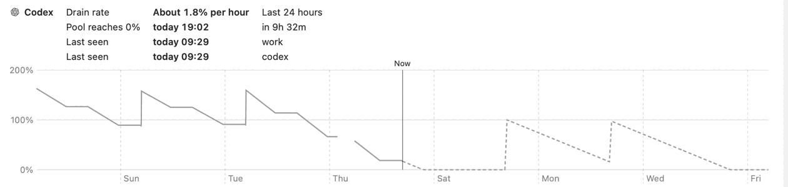

Codex usage limits: how to check what's left and when it resets
Codex usage limits depend on your ChatGPT plan, the model, and the size of each task. To see what is left and when it resets, open the Codex usage dashboard or type /status in the Codex CLI.
Published
Codex is OpenAI's coding agent. It is included in the ChatGPT Free, Go, Plus, Pro, Business, Edu, and Enterprise plans, and most plans have an allowance that runs out and comes back. This guide covers what OpenAI publishes about Codex usage limits, how to check your own numbers, and what OpenAI does not say. Everything here comes from OpenAI's Codex pricing page and the Codex CLI command reference, as of October 2026. OpenAI changes these limits often, so check the linked pages for the current version.
What the Codex limits are
OpenAI does not publish one fixed number of messages per plan. It says the number of messages you can send depends on the model, the size and complexity of your tasks, and whether you run them locally or in the cloud. Long sessions that need more context use much more of the allowance per message than small scripts do.
There are two windows to know about:
- Five-hour window. OpenAI gives estimates of local messages per five-hour period for Plus and Standard Business. It says Pro plans currently have no five-hour limit.
- Weekly window. OpenAI says only that weekly limits "may also apply." The pricing page does not list weekly numbers for any plan.
Codex limits by plan
- Plus ($20 a month) and Standard Business. Estimated local messages per five hours: GPT-6 Astra 5 to 45, GPT-6.1 Sol 15 to 160, GPT-6 Sol 15 to 150, and GPT-6 Luna 350 to 3,000. OpenAI calls these estimates, not fixed message limits.
- Pro ($100, $200, or $500 a month). No five-hour limit at present. OpenAI links to a separate comparison of Pro plans and usage limits in its help center.
- Free and Go. The pricing page describes these plans for "quick" and "lightweight" coding tasks. It gives no message estimates.
- Enterprise and Edu. Workspaces with flexible pricing have no fixed rate limits, and usage scales with credits. Workspaces without flexible pricing have the same per-seat limits as Plus for most features.
Source: Codex pricing, "What are the usage limits for my plan?", as of October 2026.
What uses the allowance faster
- Local messages and cloud chats share one allowance, and cloud tasks may use more of it than local messages.
- Fast mode uses included usage at 2.5 times the Standard rate. Ultrafast mode on GPT-6 Astra and GPT-6.1 Sol uses it at 8 times the Standard rate.
- Image generation uses included limits about 3 to 5 times faster on average.
- Codex reviews run locally or outside GitHub count toward your general limits. Only reviews that run through GitHub count as separate Code Review usage.
- ChatGPT Work inside ChatGPT shares the same usage limits as Codex.
Source: Codex pricing, as of October 2026.
How to check Codex usage
OpenAI names two places to see your current usage limits:
- The usage dashboard at chatgpt.com/codex/settings/usage. You must be signed in. OpenAI points to this page for current limits and reset times.
- The
/statuscommand in an active Codex CLI session. The pricing page says it shows your remaining limits. The command reference describes it as showing session configuration and token usage, and the app's command list says it shows the chat ID, context usage, and rate limits.
The Codex CLI has two more commands that help:
/usageopens a menu where you can show token activity or redeem an available earned reset. Type/usage daily,/usage weekly, or/usage cumulativeto go straight to one view. It needs a ChatGPT sign-in. OpenAI does not explain how a reset is earned./statuslinelets you add rate limits to the footer of the CLI, so they stay on screen while you work. The choice is saved totui.status_lineinconfig.toml.
In the ChatGPT desktop app, /usage opens usage and billing settings when you are signed in with ChatGPT, per the app's slash command reference.
When Codex limits reset
OpenAI's documentation does not publish a reset schedule. It does not say whether the weekly window starts on a fixed day, rolls from your first use, or works some other way. It sends you to the usage dashboard for your own reset times. If you need an exact time, read it there or in /status, and do not rely on a rule from a third-party guide.
OpenAI also suggests checking the dashboard every week or two to understand your pace and remaining capacity.
What happens when you hit a Codex limit
Per OpenAI's pricing FAQ:
- If you reach the limit during an active turn, the agent can keep working on that turn, subject to fair use limits.
- Plus and Pro users can buy more credits instead of upgrading the plan.
- Business, Edu, and Enterprise workspaces with flexible pricing can buy more workspace credits.
- Anyone can run extra local chats with an API key. That usage is billed at standard API rates, not from the plan.
How to make the allowance last
OpenAI's own tips are to keep prompts precise, give only the files that matter, ask for the output length you need, keep AGENTS.md files small, and turn off MCP servers you are not using, since each server adds context to every message. Picking a smaller model for routine work also helps, because the five-hour estimates differ a lot by model.
See every Codex account at once with Limits Left
/status shows one signed-in account, and only while a CLI session is open. Limits Left is a free, open source Mac menu bar app that keeps the number in view for every Codex account you add. It shows how much quota is left on each account and when it resets, says whether each account is ahead of or under pace, adds up the weekly quota left when you have two or more accounts, and forecasts when that weekly total would reach 0%. It reads Codex usage from the Codex CLI and your local Codex logs, and it keeps its history only on your Mac. See how it works and what it stores.

Limits Left is an independent project and is not affiliated with or endorsed by OpenAI. Codex is a product of OpenAI.
FAQ
Does Codex have a weekly limit?
OpenAI says weekly limits may apply, but it does not publish weekly numbers for any plan. Your usage dashboard shows your own limits.
Is Codex plan usage the same as OpenAI API usage?
No. Plan usage comes from your ChatGPT plan. When you use Codex with an API key, you pay standard API rates instead, and OpenAI says not to use API token prices to estimate how many tasks a plan includes.
Does Codex Pro have a five-hour limit?
Not at present. OpenAI's pricing page says Pro plans currently have no five-hour limit.
Where do I see when my Codex limit resets?
In the Codex usage dashboard, or with /status in the Codex CLI.